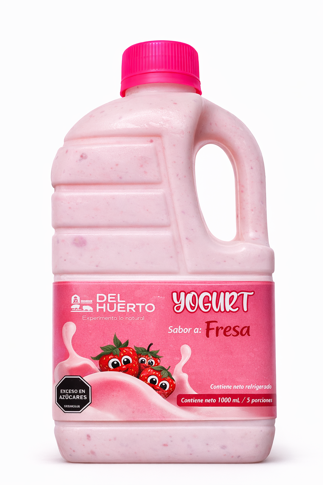
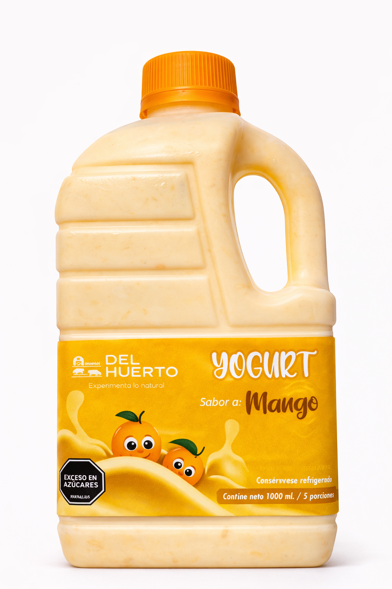
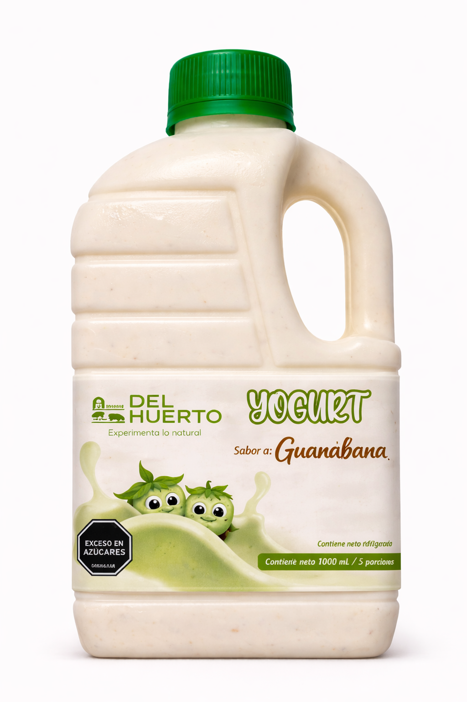
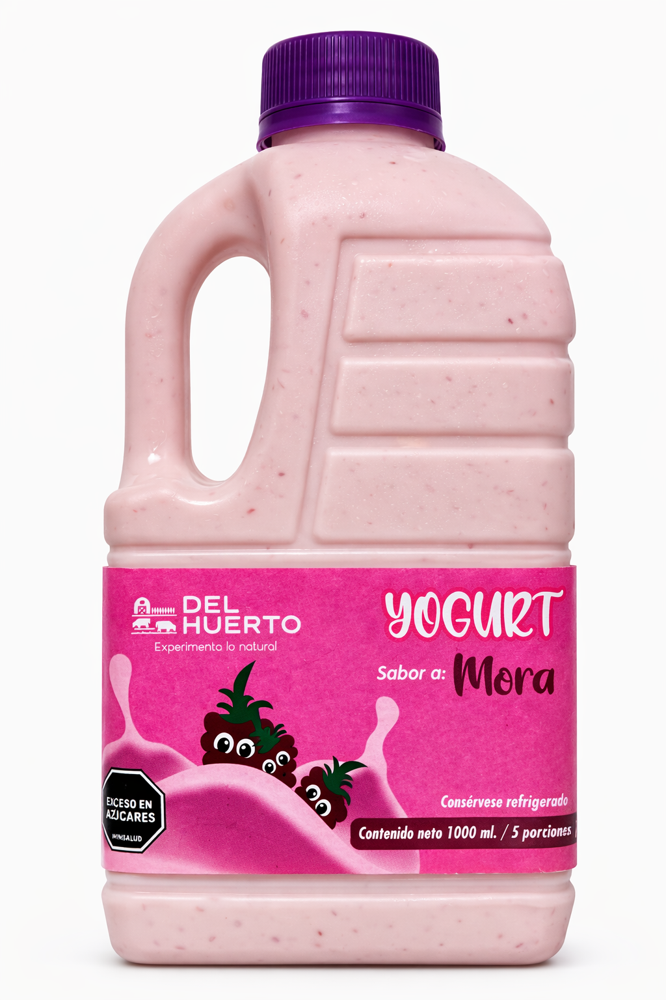
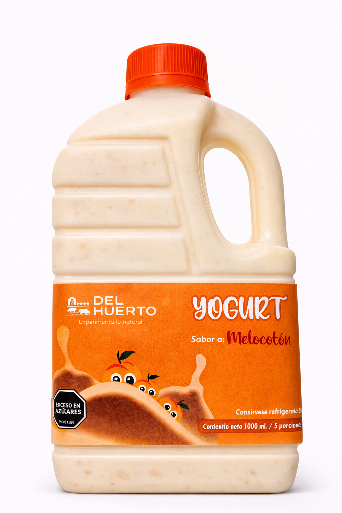
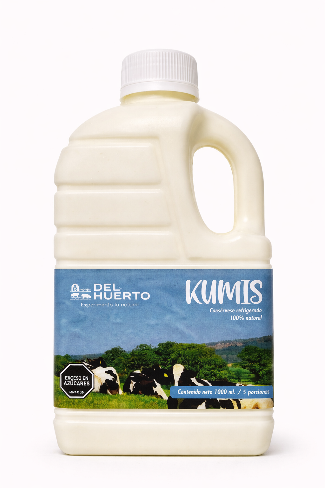
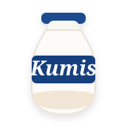

HECHOS CON FRUTAS REALES
Sabores que nacen del campo
Cada sabor es el resultado de ingredientes frescos, procesos lentos y el cuidado artesanal que nos define.
Nuestros sabores
Conoce cada producto y sus ingredientes

 Natural
Natural
Ideal para combinar con todo, y si te gusta una opción más tradicional.
Ingredientes
Leche entera higienizada, cultivos lácticos (Streptococcus thermophilus y Lactobacillus bulgaricus), azúcar.

Fresa
Alto contenido en antioxidantes, favorece la salud del corazón, y refuerza las defensas.
Ingredientes
Leche entera higienizada, cultivos lácticos (Streptococcus thermophilus y Lactobacillus bulgaricus), fresa entera natural, azúcar.

Mango
Fuente de vitamina A, favorece la piel, la vista y es un energizante natural.
Ingredientes
Leche entera higienizada, cultivos lácticos (Streptococcus thermophilus y Lactobacillus bulgaricus), pulpa de mango, azúcar.

Guanabana
Propiedades antioxidantes, aporta a la salud digestiva, y es fuente natural de energía.
Ingredientes
Leche entera higienizada, cultivos lácticos (Streptococcus thermophilus y Lactobacillus bulgaricus), pulpa de guanabana, azúcar.

Manzana Verde
Ayuda a regular el colesterol, es rico en fibra e ideal para una digestión ligera.
Ingredientes
Leche entera higienizada, cultivos lácticos (Streptococcus thermophilus y Lactobacillus bulgaricus), pulpa de manzana verde, azúcar.

Mora
Es un antioxidante, ya que aporta vitamina C y beneficia a la circulación.
Ingredientes
Leche entera higienizada, cultivos lácticos (Streptococcus thermophilus y Lactobacillus bulgaricus), pulpa de mora, azúcar.

Melocotón
Refuerza el sistema inmunológico, ayuda a la digestión, y es rico en vitaminas A y C.
Ingredientes
Leche entera higienizada, cultivos lácticos (Streptococcus thermophilus y Lactobacillus bulgaricus), pulpa de melocotón, azucar.


KumisRefuerza el sistema inmunológico, ayuda a la digestión, y es rico en vitaminas A y C.
Ingredientes
Leche entera higienizada, cultivos lácticos (Streptococcus thermophilus y Lactobacillus bulgaricus), pulpa de melocotón, azucar.